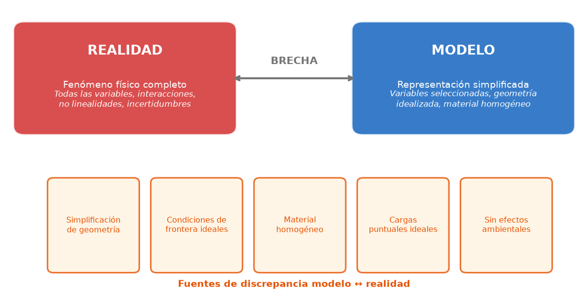

Pre-procesamiento:
geometría, material y malla
y determina la calidad del resultado.
Agenda de la sesión
Geometría
Simplificar con criterio: qué eliminar casi siempre y qué conservar siempre. La regla de St. Venant.
Material
Propiedades con trazabilidad: acero, aluminio, fundición. El peligro del E "nominal". Modelos constitutivos.
Malla
El corazón del FEM: tipos de elemento (TET4, TET10, HEX8…) y las 6 reglas prácticas de mallado.
Práctica
Placa con agujero: concentración de esfuerzos. Kt de Peterson, malla fina local y verificación < 5%.
El pre-procesamiento: el 60–70% del tiempo
En toda simulación profesional, la mayor parte del tiempo no se resuelve ni se post-procesa: se prepara. Las decisiones de aquí determinan la calidad de todo lo demás.
Geometría
Simplificar con criterio. Si se elimina mal, el error entra aquí y no se detecta jamás en el post-proceso.
Material
Propiedades con trazabilidad. Un E equivocado invalida frecuencias, pandeo y desplazamientos.
Malla
Discretización: tipo de elemento y reglas prácticas. El 22% de los errores de simulación nace aquí.
Geometría: simplificar con criterio
Eliminar (casi siempre)
- · Roscas de tornillos (modele el cuerpo cilíndrico o use conectores)
- · Redondeos y chaflanes pequeños, si no están en zona de alta tensión
- · Logotipos, grabados, texturas superficiales
- · Agujeros no estructurales (drenaje, accesorios sin carga)
Conservar (siempre)
- · Cambios bruscos de sección: son concentradores de esfuerzo
- · Agujeros en zonas de alta tensión
- · Superficies de contacto entre partes
- · Filetes y radios en zonas críticas
St. Venant: lo local queda local

Regla de St. Venant
Los detalles geométricos solo afectan localmente. Si su zona de interés está lejos de un detalle que eliminó, el error es despreciable.
Ejemplo de esta sesión
El agujero de la placa es un detalle local: a 2–3 diámetros de distancia el esfuerzo vuelve a σnominal. Pero el borde del agujero es nuestra zona de interés: ahí el detalle se conserva… y se refina.
Material: propiedades con trazabilidad
| Material | E (GPa) | ν | ρ (kg/m³) | Comportamiento |
|---|---|---|---|---|
| Acero estructural | 200–210 | ≈ 0.30 | ≈ 7850 | Dúctil |
| Aleación de aluminio | 68–72 | ≈ 0.33 | ≈ 2700 | Dúctil |
| Fundición gris | 80–140 | ≈ 0.26 | ≈ 7100 | Frágil |
El E "nominal" es una trampa
¿Por qué duele?
E entra linealmente en la rigidez: \(\delta \propto 1/E\) y las frecuencias \(\propto \sqrt{E}\). Un 5% de error en E es un 5% de error en desplazamientos y ~2.5% en frecuencias.
La conducta correcta
Busque la hoja de datos o la norma del lote real. Si no la tiene, declare la incertidumbre y haga análisis de sensibilidad (como en el Taller 1).
Modelos constitutivos: cómo responde el material
| Modelo | ¿Cuándo usarlo? | Limitación |
|---|---|---|
| Elástico lineal | Pequeñas deformaciones, sin plasticidad | No captura fluencia ni daño |
| Elasto-plástico (von Mises) | Metales dúctiles con plasticidad | No captura daño progresivo |
| Hiperelástico (Mooney-Rivlin) | Elastómeros, tejidos biológicos | Requiere datos experimentales de calibración |
| Viscoelástico | Polímeros, comportamiento dependiente del tiempo | Complejidad de parámetros |
| Ortotrópico / Anisotrópico | Maderas, composites, laminados | Más constantes elásticas que medir |
El mallado: el corazón del FEM

¿Por qué "corazón"?
Los desplazamientos convergen rápido incluso con mallas gruesas; los esfuerzos exigen elementos adecuados y mallas finas donde hay gradientes.
Lo que decide la malla
El tipo de elemento fija la precisión; el tamaño local fija la resolución del gradiente. Ambos se eligen antes de resolver — y eso es pre-procesamiento.
Tipos de elemento: elija con intención
| Elemento | Orden | ¿Cuándo usarlo? |
|---|---|---|
| TET4 (tetraedro lineal) | 1º | Mallas automáticas, geometría compleja. Demasiado rígido |
| TET10 (tetraedro cuadrático) | 2º | Buen compromiso precisión/automático para 3D complejo |
| HEX8 (hexaedro lineal) | 1º | Mallas estructuradas; requiere geometría "barrible" |
| HEX20 (hexaedro cuadrático) | 2º | Máxima precisión en 3D estructurado |
| TRI3 / QUAD4 | 1º | 2D: tensión/deformación plana, axi-simetría |
| Shell (S4R, S8R) | — | Paredes delgadas (espesor << otras dimensiones) |
Seis reglas prácticas de mallado
- Espesor — mínimo 2–3 elementos a través del espesor en paredes delgadas con sólidos
- Curvatura — mínimo 4–5 elementos en un radio de 90°
- Transición suave — el tamaño no debe cambiar más de 2× entre elementos adyacentes
- Gradientes — refinar donde hay gradientes altos: esquinas entrantes, cambios de sección, contacto
- Distorsión — aspect ratio > 10:1 es sospechoso; ángulos < 20° o > 160° son problemáticos
- Calidad — chequear antes de resolver: aspect ratio, skewness, Jacobian, warping factor
Placa con agujero — el problema
Enunciado
- · Placa de acero: 200 × 100 × 5 mm
- · Agujero circular central: Ø 20 mm
- · Tracción uniaxial \(\sigma = 10\ \text{MPa}\) en los extremos
- · Acero: \(E = 210\ \text{GPa},\ \nu = 0.3\)
Pregunta de diseño
¿Cuál es el esfuerzo máximo y dónde ocurre?
El agujero convierte un problema "sencillo" en un clásico de concentración de esfuerzos: el pico no está en la carga, está en la geometría.
La referencia: Kt de Peterson
Esfuerzo nominal
\(\sigma_{nom} = 10\ \text{MPa}\)
Factor de concentración
Placa infinita: \(K_t = 3\)
Esfuerzo máximo
\(\sigma_{máx} \approx 25\ \text{MPa}\)
Plan de trabajo en FreeCAD FEM
- Geometría — Part → Primitives → Box: 200 × 100 × 5 mm
- Agujero — Part → Primitives → Cylinder (Radius 10, Height 50), centrado en (100, 50)
- Booleano — Part → Boolean → Cut: Box − Cylinder
- Análisis — FEM → Analysis container → New analysis; material acero (E = 210000 MPa, ν = 0.3)
- Condiciones — Constraint fixed en x = 0 (cara completa); Constraint force 5000 N en x = 200 (dirección axial X)
- Malla — Gmsh 5 mm + refinamiento local 1.5 mm en las aristas del agujero
- Solver — CalculiX: Write .inp → Run → "CalculiX done!"
- Resultados — von Mises: σmáx en el borde del agujero ≈ 22–27 MPa
La malla y el pico de esfuerzo
| Malla | Tamaño global | Refinamiento agujero | σmáx típico (TET10) |
|---|---|---|---|
| Gruesa | 10 mm | 1.5 mm local | ≈ 18–22 MPa — subestima el gradiente |
| Media | 5 mm | 1.5 mm local | ≈ 22–26 MPa — se acerca |
| Fina | 2.5 mm | 1.5 mm local | ≈ 24–27 MPa — convergida (< 5%) |
Los errores que hoy están en juego

Taller 3 — El concentrador de esfuerzos
Parte A · Diámetro vs. Kt
Simule d = 10, 20 y 30 mm (\(d/w = 0.1,\ 0.2,\ 0.3\)). Calcule el Kt numérico y compárelo con Peterson (≈ 2.7, 2.5, 2.3): observe la tendencia decreciente con d/w.
Parte B · Malla gruesa vs. fina
Cuantifique cuánto cambia σmáx entre malla gruesa y fina alrededor del agujero. La lección: el refinamiento local es obligatorio donde hay gradientes.
Parte C · Discusión
Tabla Kt numérico vs. teórico + reflexión: ¿por qué la placa infinita da Kt = 3 y la finita menos? ¿Sobre qué esfuerzo nominal calcula Kt?
Lo que debe quedar hoy
El pre-proceso manda
El 60–70% del tiempo y la calidad del resultado se deciden antes de resolver.
Geometría y material
Simplifique con criterio (St. Venant) y documente cada propiedad con trazabilidad.
La malla es el corazón
Elemento correcto (TET10), 6 reglas prácticas y refinar donde hay gradientes.
Próxima sesión
Sesión 4 — El solver y el post-procesamiento
Qué hace CalculiX cuando usted aprieta "Solve": el ensamblaje de \([K]\{u\} = \{F\}\) y sus solvers directo/iterativo (cap. 4.3). Y cómo leer resultados con escepticismo: singularidades, tipos de esfuerzo y qué reportar (cap. 4.4).
Recursos de la sesión
Guía de referencia
- Cap. 2.4 — Modelos constitutivos
- Cap. 4.2 — El arte del pre-procesamiento
- Cap. 5 — Errores 2 (mallado 22%), 3 (material 15%), 4 (elemento 10%)
- Cap. 9.2 — Ejercicio: placa con agujero
Archivos del curso
- ejercicio_paso_a_paso.html — guía detallada
- taller.html — enunciado + rúbrica
- video/guion.md — guion del video asíncrono
- Notebooks guía: 02_convergencia_malla.ipynb
Referencia: W. D. Pilkey y D. F. Pilkey, Peterson's Stress Concentration Factors, 4.ª ed., Wiley, 2008 — figuras de Kt para placa finita con agujero central.